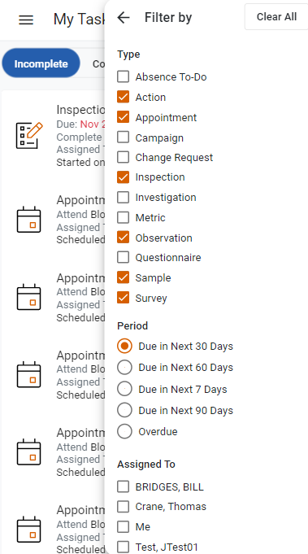

The My Tasks view provides three filters: Type, Period, and Assigned To. The filters are located at the top of the Incomplete and Complete tabs.
To filter your assigned tasks, click Filters at the top of the Incomplete or Complete sections. A list of available filters will open. Select your desired filter(s) and click Apply.

If you are a Supervisor, the Assigned To filter will list the employees who are assigned to you. If you select one or more employees from the Assigned To filter, the My Tasks view will display tasks that are assigned to the selected employee(s). If you are not a Supervisor, the Assigned To filter will only show the Me option.
If you select the Appointment filter, both your scheduled medical appointments and surveillance activities will display.
For surveillance activities, when the Period filter is blank (or null), all due activities will be displayed in the Incomplete section.